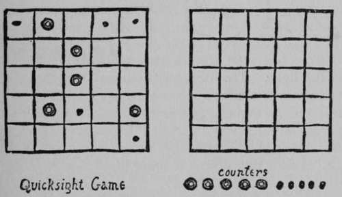
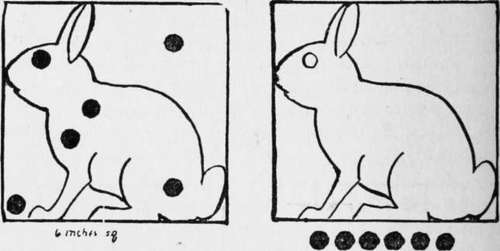

The Game Of Quicksight
Description
This section is from the book "The Book Of Woodcraft", by Ernest Thompson Seton. Also available from Amazon: The Book of Woodcraft.
The Game Of Quicksight
Take two boards about a foot square, divide each into twenty-five squares; get ten nuts and ten pebbles. Give to one player one board, five nuts, and five pebbles. He places these on the squares in any pattern he fancies, and when ready, the other player is allowed to see it for five seconds. Then it is covered up, and from the memory of what he saw the second player must reproduce the pattern on his own board. He counts one for each that was right, and takes off one for each that was wrong. They take turn and turn about.
This game is a wonderful developer of the power to see and memorize quickly.
Far Sight, Or Spot The Rabbit
Take two six-inch squares of stiff white pasteboard or whitened wood. On each of these draw an outline Rabbit, one an exact duplicate of the other. Make twenty round black wafers or spots, each half an inch across. Let one player stick a few of these on one Rabbit-board and set it up in full light. The other, beginning at 100 yards, draws near till he can see the spots well enough to reproduce the pattern on the other which he carries. If he can do it at 75 yards he has wonderful eyes. Down even to 70 (done 3 times out of 5) he counts high honor; from 70 to 60 counts honor. Below that does not count at all.
Home Star Or Pole Star
Each competitor is given a long, straight stick, in daytime, and told to lay it due north and south. In doing this he may guide himself by sun, moss, or anything he can find in nature - anything, indeed, except a compass.
The direction is checked by a good compass corrected for the locality. The one who comes nearest wins.
It is optional with the judges whether the use of a timepiece is to be allowed.
Rabbit Hunt
The game of Rabbit-hunting is suited for two hunters in limited grounds.
Three little sacks of brown burlap, each about eight inches by twelve, are stuffed with hay.
At any given place in the woods the two hunters stand in a 10-foot circle with their bows and arrows. One boy is blindfolded; the other, without leaving the circle, throws the Rabbits into good hiding places on the ground. Then the second hunter has to find the Rabbits and shoot them without leaving the circle. The lowest number of points wins, as in golf. If the hunter has to leave the circle he gets one point for every step he takes outside. After he sees the Rabbit he must keep to that spot and shoot till it is hit once. One shot kills it, no matter where struck. For every shot he misses he gets five points.
After his first shot at each Rabbit the hider takes alternate shots with him.
If it is the hider who kills the Rabbit, the hunter adds ten points to his score. If the hunter hits it, he takes ten off his score.
If the hunter fails to find all the Rabbits, he scores twenty-five for each one he gives up.
The hider cannot score at all. He can only help his friend into trouble. Next time the two change places.
A match is usually for two brace of Rabbits.
Arrow Fight
This is a good one for challenges between two bands of equal numbers, say six on a side.
Each brave is armed with a bow and arrows (blunt preferred). Let the two bands stand in a row opposite a given bank, 10 to 20 yards away. Against this bank should be a row of 12-inch wooden or card disks (wooden dishes do well) set on edge lightly in stakes. Each brave is represented by a disk, which is opposite his enemy or corresponding number. Thus six disks, number one to six, represent the Wolf Band; they are opposite the Eagles, and vice-versa.
At the word go each shoots at the disks that represent his enemies. As soon as the disk that represents himself is shot, he must fall; he is out of the fight. The battle continues until all of one side are down. A truce may be arranged to recover the arrows.
Continue to:
Tags
bookdome.com, books, online, free, old, antique, new, read, browse, download